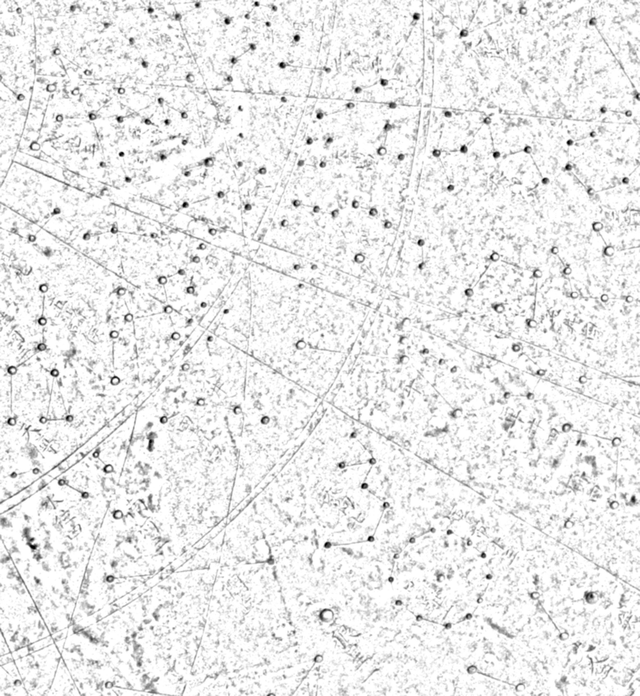

1395년, 조선.
망원경은 아직 없었다.
그런데 그들은 별의 밝기까지 기록했다.
정말일까? 우리가 직접 재서 확인해보자.
화면을 누르면 바로 넘어갑니다
천상열차분야지도가 뭘까요?

이게 뭐예요?
하늘의 별자리를 돌에 새긴 지도입니다. 1395년 조선이 만들었고, 지금은 국보입니다.
각석(刻石, 돌에 새긴 것)이라고 부릅니다.
얼마나 대단한 건가요?
새겨진 별이 1,467개입니다. 돌에 새긴 별지도로는 세계에서 두 번째로 오래됐습니다.
첫 번째는 중국의 순우천문도(1247년)입니다.
어디서 본 적 있을 거예요
만원권 지폐 뒷면에 이 그림이 있습니다. 여러분 지갑 속에도 있습니다.
혼천의(渾天儀, 옛 천체 관측 기구) 뒤에 깔린 별지도가 바로 이것입니다.
한 곳만 골라서 자세히 봅시다
별이 1,467개나 새겨져 있습니다. 전부 살펴보기는 어렵습니다. 그래서 오늘은 한 곳만 골라 자세히 봅시다.

여기는 삼수(參宿)라는 별자리 근처입니다. 지금 우리가 오리온자리라고 부르는 그 별들입니다. 겨울 밤하늘에서 가장 찾기 쉬운 별자리입니다.
600년 전 조선 사람들도 같은 별을 보고 있었습니다.
장면 1 · 종이에 그린 지도
옛 사람들이 종이에 그린 별지도입니다. 별의 위치는 정확하게 그렸습니다. 색깔은 옛 학자들이 각각 기록한 별을 구분한 것입니다.
그런데 잘 보세요 — 별의 크기가 전부 똑같습니다.
이 지도만 봐서는 어떤 별이 밝은지 알 수 없습니다.
별 3개를 확대한 모습 — 크기가 모두 같습니다
장면 2 · 돌에 새긴 지도
이번엔 돌에 새긴 지도입니다. 같은 자리, 같은 별입니다.
무엇이 다를까요?
별마다 크기가 다릅니다. 큰 것, 작은 것, 아주 작은 것이 섞여 있습니다.
장면 1에서 봤던 바로 그 별 3개 — 크기가 제각각입니다
종이 → 돌 → 밤하늘
손잡이를 오른쪽으로 밀어 보세요. 종이 지도 위로 돌 지도가, 그 위로 실제 밤하늘이 차례로 나타납니다.
밤하늘은 사진이 아니라, 돌에 새겨진 자국의 크기를 밝기로 바꿔 그린 것입니다.
왜 크기를 다르게 새겼을까요?
정답은 아직 알려드리지 않습니다. 먼저 예상해 보세요.
좋습니다. 그럼 직접 재서 확인해 봅시다.
우리 반 예상 모으기
이 태블릿에서 고른 것만 모은 결과입니다.
별의 밝기를 나타내는 방법
1. 별은 밝기가 다릅니다
밤하늘을 보면 아주 밝은 별도 있고, 겨우 보이는 별도 있습니다.
같은 밤하늘에 있어도 밝기는 이렇게 다릅니다.
2. 2천 년 전 그리스 사람들의 방법
그리스 사람들은 별의 밝기에 순서를 매겼습니다. 가장 밝은 별을 1등급, 겨우 보이는 별을 6등급이라고 불렀습니다.
이것을 겉보기 등급이라고 합니다. 눈에 보이는 밝기의 등급이라는 뜻입니다.
3. 여기가 제일 헷갈립니다
숫자가 작을수록 밝습니다!
1등급이 6등급보다 밝습니다. 등수라고 생각하면 쉽습니다 — 1등이 제일 밝은 것이죠.
4. 0등급, 그리고 마이너스 등급
아주 밝은 별은 0등급, 그보다 더 밝으면 마이너스 등급까지 갑니다.
밤하늘에서 가장 밝은 별 시리우스는 −1.5등급입니다. 오늘 우리가 잴 12개 별 중 하나입니다.
이 앱의 등급 값은 모두 근사값(≈)입니다.
이제 직접 재봅시다
별 자국의 크기를 직접 잽니다. 별들이 표시되어 있습니다. 하나씩 눌러서 자국의 지름을 재고 기록해 봅시다.
측정하기
지도 위 번호를 누르면 그 별이 크게 확대됩니다.
내가 잰 값과 실제 밝기
내가 잰 자국의 크기 옆에, 오늘날 천문학이 밝혀낸 겉보기 등급을 나란히 놓았습니다.
점으로 나타내 봅시다
가로로는 별의 밝기(등급), 세로로는 내가 잰 크기를 놓고 점을 찍어 봅시다. 별 하나가 점 하나입니다.
이렇게 두 가지를 점으로 나타낸 그래프를 산점도라고 합니다.
점들이 어느 방향으로 모여 있나요?
점들이 대체로 이 방향으로 모여 있습니다. 왼쪽(밝은 별)일수록 위쪽(크게 새김)에 있습니다.
오늘 무엇을 알아냈나요
먼저 내 생각을 써 봅시다
그래프를 보고 알게 된 것을 한 문장으로 써 보세요.
두 지도의 차이가 뜻하는 것
종이에 그린 지도는 별이 어디에 있는지를 알려줍니다. 색깔은 옛 학자들이 각각 기록한 별을 구분한 것입니다. 하지만 별의 크기는 모두 같아서, 얼마나 밝은지는 알 수 없습니다.
돌에 새긴 지도는 다릅니다. 별마다 크기를 다르게 새겼습니다. 그리고 오늘 우리가 직접 재어 확인했듯이, 그 크기는 실제 밝기와 맞아떨어집니다.
즉 조선의 천문학자들은 별의 위치뿐 아니라 밝기까지 관측해 기록으로 남긴 것입니다. 망원경도 없던 시절에, 오직 눈으로.